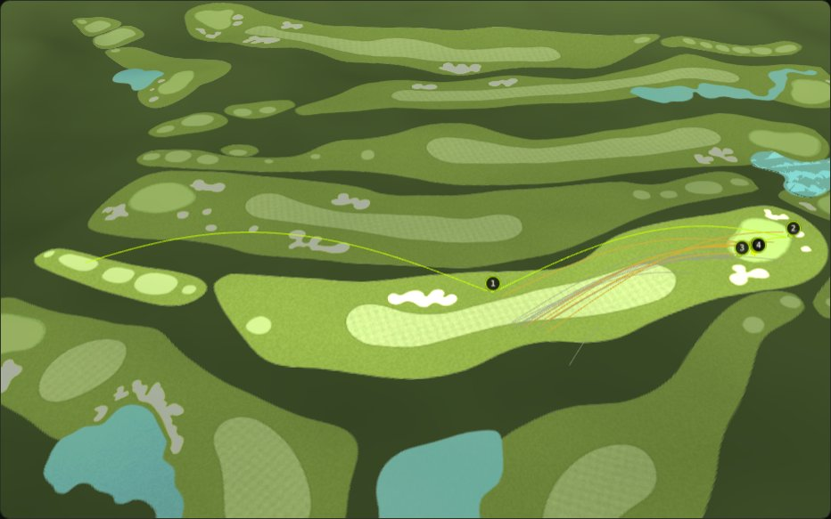

<title>김새로미 2026 시즌 리포트</title>
<meta name="claude:viewport-fit-sides" content="cover">
<link rel="preconnect" href="https://fonts.googleapis.com">
<link rel="stylesheet" href="https://fonts.googleapis.com/css2?family=IBM+Plex+Sans+KR:wght@400;500;700&family=IBM+Plex+Mono:wght@500;600&display=swap">
<style>
/* Layout: one reading column; each section answers one question, numbers set in mono; NEO black edition, single dark look by choice */
:root {
  color-scheme: dark;
  --bg: #0d0f0c; --panel: #161a14; --panel-2: #1d2219; --line: #2c3326;
  --fg: #ecebe3; --muted: #9a9c8f; --gold: #d4af37; --neon: #c6ff00;
  --gain: #4fd1a5; --loss: #e0684f; --r1: #c6ff00; --r2: #5ec8ff;
  --font-ui: "IBM Plex Sans KR", "Apple SD Gothic Neo", "Malgun Gothic", sans-serif;
  --font-num: "IBM Plex Mono", ui-monospace, Menlo, monospace;
}
* { box-sizing: border-box; }
html, body { background: var(--bg); color: var(--fg); }
body { font-family: var(--font-ui); font-size: 15px; line-height: 1.65; }
main { max-width: 760px; margin: 0 auto; padding-block: 28px 56px; padding-left: max(16px, env(safe-area-inset-left, 0px)); padding-right: max(16px, env(safe-area-inset-right, 0px)); display: grid; gap: 40px; }
main > * { min-width: 0; }
.eyebrow { font-family: var(--font-num); font-size: 12px; letter-spacing: .14em; color: var(--gold); text-transform: uppercase; }
h1 { margin: 6px 0 4px; font-size: clamp(26px, 4.4vw, 38px); line-height: 1.25; text-wrap: balance; }
h2 { margin: 0 0 4px; font-size: 21px; text-wrap: balance; }
h2 .q { display: block; font-family: var(--font-num); font-size: 12px; color: var(--gold); letter-spacing: .08em; font-weight: 500; margin-bottom: 4px; }
p { margin: 0; max-width: 68ch; }
.lede { font-size: 17px; color: var(--fg); }
.muted { color: var(--muted); }
section { display: grid; gap: 14px; }
.verdict { border: 1px solid var(--line); border-radius: 12px; background: var(--panel); padding: 18px 20px; display: grid; gap: 12px; }
.verdict ol { margin: 0; padding-left: 20px; display: grid; gap: 6px; }
.verdict b { color: var(--neon); font-weight: 500; }
.facts { display: grid; grid-template-columns: repeat(auto-fit, minmax(200px, 1fr)); gap: 8px; }
.fact { background: var(--panel); border: 1px solid var(--line); border-radius: 10px; padding: 10px 12px; }
.fact dt { font-size: 12px; color: var(--muted); }
.fact dd { margin: 2px 0 0; font-family: var(--font-num); font-size: 20px; font-variant-numeric: tabular-nums; }
.fact dd small { font-size: 12px; color: var(--muted); margin-left: 4px; }
.tbl { overflow-x: auto; border: 1px solid var(--line); border-radius: 10px; background: var(--panel); }
table { border-collapse: collapse; width: 100%; font-size: 14px; }
th, td { padding: 8px 12px; border-bottom: 1px solid var(--line); text-align: left; }
th { color: var(--muted); font-weight: 500; font-size: 12px; }
td.n, th.n { text-align: right; font-family: var(--font-num); font-variant-numeric: tabular-nums; white-space: nowrap; }
tr:last-child td { border-bottom: 0; }
tr.hl td { background: rgba(198,255,0,.06); }
.gain { color: var(--gain); } .loss { color: var(--loss); }
figure { margin: 0; border: 1px solid var(--line); border-radius: 10px; background: var(--panel); padding: 14px 14px 10px; display: grid; gap: 8px; }
figcaption { font-size: 12px; color: var(--muted); }
svg { width: 100%; height: auto; display: block; }
svg text { font-family: var(--font-num); font-size: 12px; fill: var(--muted); }
svg .lab { font-family: var(--font-ui); fill: var(--fg); font-size: 13px; }
.callout { border-left: 3px solid var(--gold); padding: 4px 0 4px 14px; color: var(--fg); }
.rx { display: grid; gap: 10px; }
.rx div { border: 1px solid var(--line); border-radius: 10px; background: var(--panel); padding: 14px 16px; display: grid; gap: 4px; }
.rx .tag { font-family: var(--font-num); font-size: 12px; letter-spacing: .08em; }
.rx .keep .tag { color: var(--gain); } .rx .cut .tag { color: var(--loss); } .rx .ask .tag { color: var(--gold); }
a { color: var(--neon); }
a:focus-visible { outline: 2px solid var(--gold); outline-offset: 2px; }
.btn { display: inline-flex; align-items: center; gap: 8px; border: 1px solid var(--neon); border-radius: 8px; padding: 8px 14px; text-decoration: none; width: fit-content; }
.notes { font-size: 13px; color: var(--muted); display: grid; gap: 6px; }
.notes b { color: var(--fg); font-weight: 500; }
</style>

<main>
  <header>
    <div class="eyebrow">NEO GOLF DATA · Player Report · 2026 시즌</div>
    <h1>김새로미 2026 시즌 리포트</h1>
    <p class="muted">KLPGA 정규투어 26개 대회 · 74라운드 · 샷 5,369개 · 2026년 10월 하이트진로 챔피언십까지</p>
  </header>

  <section class="verdict" aria-label="결론">
    <p class="lede">퍼트로 타수를 버는 선수입니다. 시즌을 갈라놓은 것은 샷 실력보다 <b>페널티가 나온 홀</b>과 <b>1라운드 출발</b>이었습니다.</p>
    <ol>
      <li>퍼트로 시즌 <b>+21.2타</b>를 벌었습니다(KLPGA 공식 SG). 가장 확실한 강점입니다.</li>
      <li>페널티가 나온 23개 홀에서 필드 평균보다 <b>35.3타</b>를 더 쳤습니다. 라운드당 0.5타입니다.</li>
      <li>1라운드 SG는 −0.36, 2라운드는 +0.90입니다. 컷 탈락한 대회의 1라운드에서 손실이 가장 컸습니다.</li>
    </ol>
  </section>

  <section aria-labelledby="s1">
    <h2 id="s1"><span class="q">시즌 요약</span>숫자로 본 2026 시즌</h2>
    <dl class="facts">
      <div class="fact"><dt>상금 순위</dt><dd>59<small>위</small></dd></div>
      <div class="fact"><dt>컷 통과</dt><dd>14<small>/ 26</small></dd></div>
      <div class="fact"><dt>평균 타수</dt><dd>72.77<small>63위</small></dd></div>
      <div class="fact"><dt>평균 퍼트</dt><dd>30.07<small>31위</small></dd></div>
      <div class="fact"><dt>그린 적중률</dt><dd>66.7%<small>75위</small></dd></div>
      <div class="fact"><dt>페어웨이 적중률</dt><dd>60.9%<small>71위</small></dd></div>
    </dl>
    <p class="muted">KLPGA 공식 시즌 기록 기준(10월 18일). 공식 기록만 봐도 샷 지표는 하위권, 퍼트는 중상위권입니다.</p>
  </section>

  <section aria-labelledby="s2">
    <h2 id="s2"><span class="q">질문 1 · 어디서 벌고 잃었나</span>퍼트로 벌고, 티샷과 어프로치에서 잃었다</h2>
    <figure>
      <svg viewBox="0 0 640 210" role="img" aria-label="영역별 시즌 SG 합계: 티샷 -9.6, 어프로치 -5.7, 그린 주변 +5.7, 퍼트 +21.2">
        <line x1="270" y1="10" x2="270" y2="190" stroke="#3a4232"/>
        <g>
          <text class="lab" x="10" y="38">티샷</text><rect x="217.1" y="22" width="52.9" height="24" fill="#e0684f"/><text x="208" y="38" text-anchor="end">−9.6</text>
          <text class="lab" x="10" y="80">어프로치</text><rect x="238.6" y="64" width="31.4" height="24" fill="#e0684f"/><text x="230" y="80" text-anchor="end">−5.7</text>
          <text class="lab" x="10" y="122">그린 주변</text><rect x="270" y="106" width="31.4" height="24" fill="#4fd1a5"/><text x="309" y="122">+5.7</text>
          <text class="lab" x="10" y="164">퍼트</text><rect x="270" y="148" width="116.8" height="24" fill="#4fd1a5"/><text x="394" y="164">+21.2</text>
        </g>
        <text x="270" y="206" text-anchor="middle">0 = 그 라운드 필드 평균</text>
      </svg>
      <figcaption>KLPGA 공식 스트로크 게인드(SG), 24개 대회 67라운드 합계(타). 매치플레이 대회와 공식 SG가 없는 1개 대회는 빠졌습니다.</figcaption>
    </figure>
    <p>SG는 같은 라운드에 친 선수 전체의 평균과 비교해 몇 타를 벌었는지를 뜻합니다. 시즌 합계는 +11.4타로 필드 평균보다 조금 나은 수준인데, 그 안을 나누면 퍼트 한 영역이 나머지 손실을 메우고 있습니다.</p>
  </section>

  <section aria-labelledby="s3">
    <h2 id="s3"><span class="q">질문 1 · 큰 실수의 값</span>페널티 23개 홀이 35타를 가져갔다</h2>
    <p>홀마다 내 타수와 그 라운드 필드 평균 타수를 비교한 장부입니다(스트로크 플레이 25개 대회, 1,260홀).</p>
    <div class="tbl"><table>
      <thead><tr><th>구분</th><th class="n">홀 수</th><th class="n">필드 대비</th><th class="n">페널티 홀 빼면</th></tr></thead>
      <tbody>
        <tr><td>파쓰리</td><td class="n">284</td><td class="n gain">−7.2</td><td class="n gain">−10.1</td></tr>
        <tr><td>파포</td><td class="n">690</td><td class="n gain">−9.0</td><td class="n gain">−25.1</td></tr>
        <tr class="hl"><td>파파이브</td><td class="n">286</td><td class="n loss">+9.7</td><td class="n gain">−6.6</td></tr>
        <tr><td><b>시즌 전체</b></td><td class="n">1,260</td><td class="n gain">−6.5</td><td class="n gain">−41.7</td></tr>
      </tbody>
    </table></div>
    <p class="muted">− 는 필드보다 적게 친 타수(번 것), + 는 더 친 타수(잃은 것).</p>
    <p class="callout">파파이브에서만 필드보다 타수를 잃었는데, 페널티가 나온 11개 홀을 빼면 파파이브에서도 6.6타를 벌었습니다. 시즌 페널티 홀 23개 중 11개가 파파이브였습니다.</p>
    <ul class="muted" style="margin:0;padding-left:20px;display:grid;gap:4px;max-width:68ch">
      <li>첫 페널티가 나온 샷: 티샷 12번, 두 번째 샷 11번</li>
      <li>종류: 페널티구역 12번, 분실구 6번, OB 2번</li>
      <li>더블보기 이상 24개 홀 중 11개 홀에 페널티가 있었습니다.</li>
    </ul>
  </section>

  <section aria-labelledby="s4">
    <h2 id="s4"><span class="q">질문 2 · 언제 잃었나</span>1라운드에 잃고, 2라운드에 되찾았다</h2>
    <figure>
      <svg viewBox="0 0 640 230" role="img" aria-label="라운드별 평균 SG: 1라운드 합계 -0.36, 2라운드 +0.90">
        <line x1="40" y1="110" x2="630" y2="110" stroke="#3a4232"/>
        <text x="34" y="114" text-anchor="end">0</text>
        <g transform="translate(70,0)">
          <text class="lab" x="40" y="222" text-anchor="middle">합계</text>
          <rect x="10" y="110" width="26" height="28.8" fill="#c6ff00"/><rect x="42" y="38" width="26" height="72" fill="#5ec8ff"/>
          <text x="23" y="154" text-anchor="middle">−0.36</text><text x="55" y="32" text-anchor="middle">+0.90</text>
        </g>
        <g transform="translate(190,0)">
          <text class="lab" x="40" y="222" text-anchor="middle">티샷</text>
          <rect x="10" y="110" width="26" height="26.4" fill="#c6ff00"/><rect x="42" y="110" width="26" height="10.4" fill="#5ec8ff"/>
          <text x="23" y="152" text-anchor="middle">−0.33</text><text x="55" y="134" text-anchor="middle">−0.13</text>
        </g>
        <g transform="translate(310,0)">
          <text class="lab" x="40" y="222" text-anchor="middle">어프로치</text>
          <rect x="10" y="110" width="26" height="32.8" fill="#c6ff00"/><rect x="42" y="82.8" width="26" height="27.2" fill="#5ec8ff"/>
          <text x="23" y="158" text-anchor="middle">−0.41</text><text x="55" y="76" text-anchor="middle">+0.34</text>
        </g>
        <g transform="translate(430,0)">
          <text class="lab" x="40" y="222" text-anchor="middle">그린 주변</text>
          <rect x="10" y="104.4" width="26" height="5.6" fill="#c6ff00"/><rect x="42" y="95.6" width="26" height="14.4" fill="#5ec8ff"/>
          <text x="23" y="126" text-anchor="middle">+0.07</text><text x="55" y="89" text-anchor="middle">+0.18</text>
        </g>
        <g transform="translate(550,0)">
          <text class="lab" x="40" y="222" text-anchor="middle">퍼트</text>
          <rect x="10" y="86" width="26" height="24" fill="#c6ff00"/><rect x="42" y="69.2" width="26" height="40.8" fill="#5ec8ff"/>
          <text x="23" y="80" text-anchor="middle">+0.30</text><text x="55" y="63" text-anchor="middle">+0.51</text>
        </g>
        <rect x="70" y="8" width="10" height="10" fill="#c6ff00"/><text x="86" y="17">1라운드 (24개 대회)</text>
        <rect x="230" y="8" width="10" height="10" fill="#5ec8ff"/><text x="246" y="17">2라운드 (23개 대회)</text>
      </svg>
      <figcaption>KLPGA 공식 SG 라운드 평균. 1라운드와 2라운드는 같은 출전 선수 전원이 기준이라 공정하게 비교할 수 있습니다.</figcaption>
    </figure>
    <div class="tbl"><table>
      <thead><tr><th>1라운드</th><th class="n">대회 수</th><th class="n">1R SG</th><th class="n">그중 어프로치</th></tr></thead>
      <tbody>
        <tr><td>컷 탈락한 대회</td><td class="n">11</td><td class="n loss">−1.64</td><td class="n loss">−1.28</td></tr>
        <tr><td>컷 통과한 대회</td><td class="n">12</td><td class="n gain">+1.21</td><td class="n gain">+0.65</td></tr>
      </tbody>
    </table></div>
    <p>1·2라운드를 모두 친 23개 대회 중 15개에서 1라운드가 더 나빴습니다. 1라운드에는 더블보기 이상이 13개, 2라운드에는 5개였습니다. 페널티 홀도 9개와 5개였습니다.</p>
  </section>

  <section aria-labelledby="s5">
    <h2 id="s5"><span class="q">질문 2 · 어떤 상황에서</span>1라운드 차이는 러프에서 치는 125~150yd에 몰려 있다</h2>
    <div class="tbl"><table>
      <thead><tr><th>핀까지 거리 (어프로치)</th><th class="n">1라운드</th><th class="n">2라운드</th></tr></thead>
      <tbody>
        <tr><td>30–100yd</td><td class="n">81%</td><td class="n">86%</td></tr>
        <tr><td>100–125yd</td><td class="n">72%</td><td class="n">76%</td></tr>
        <tr class="hl"><td>125–150yd</td><td class="n loss">63%</td><td class="n">76%</td></tr>
        <tr><td>150–175yd</td><td class="n">61%</td><td class="n">62%</td></tr>
        <tr><td>175–200yd</td><td class="n">54%</td><td class="n">48%</td></tr>
      </tbody>
    </table></div>
    <p class="muted">그 샷 한 번으로 그린에 올린 비율. 125~150yd만 1·2라운드 차이가 큽니다.</p>
    <div class="tbl"><table>
      <thead><tr><th>125–150yd, 출발 라이</th><th class="n">1라운드</th><th class="n">2라운드</th></tr></thead>
      <tbody>
        <tr><td>페어웨이</td><td class="n">71% (48/68)</td><td class="n">81% (46/57)</td></tr>
        <tr class="hl"><td>러프</td><td class="n loss">34% (11/32)</td><td class="n">63% (20/32)</td></tr>
      </tbody>
    </table></div>
    <p>러프에서 친 125~150yd 샷의 날아간 거리를 남은 거리와 비교하면, 1라운드에는 평균 <b>7.8yd 짧았고</b> 2라운드 이후에는 1.7yd 짧았습니다. 1라운드 미스는 짧은 쪽 12개, 긴 쪽 9개로 섞여 있습니다.</p>
    <p class="callout">다만 이 조건은 원래 어렵습니다. 하이트진로 챔피언십 전 필드 기록으로 보면 같은 조건의 필드 그린 적중률은 42%(221/524)였습니다. 1라운드 34%는 필드보다 조금 낮은 정도이고, 2라운드 63%는 필드보다 크게 좋은 수치입니다.</p>
  </section>

  <section aria-labelledby="s6">
    <h2 id="s6"><span class="q">장면 · 실지형 3D</span>하이트진로 챔피언십 1라운드 12번 홀</h2>
    <p>파포 410yd. 티샷이 233yd를 날아가 러프에 멈췄고 핀까지 149.5yd가 남았습니다. 두 번째 샷은 러프에서 178yd를 날아가 남은 거리보다 28yd를 더 갔고, 다시 러프로 들어갔습니다(남은 거리 30yd). 보기로 끝났습니다.</p>
    <figure>
      
      <figcaption>실제 GPS 좌표와 해발 고도로 그린 1라운드 12번 홀. 연두색 선이 김새로미 선수의 샷, 금색·회색 선은 같은 라운드 다른 선수들이 러프 125~150yd에서 친 샷입니다(금색 = 그린 적중, 회색 = 그린 놓침).</figcaption>
    </figure>
    <p>같은 라운드, 같은 홀, 같은 조건에서 필드는 18샷 중 7샷(39%)만 그린에 올렸습니다. 이 장면은 "실수"보다 "원래 어려운 자리"에 가깝습니다. 3D 페이지에서는 이 홀의 샷이 순서대로 재생되고, 다른 라운드와 홀도 같은 방식으로 볼 수 있습니다.</p>
    <a class="btn" href="https://claude.ai/artifact/GTmE4ru3teYF1mymvsgYvL" target="_blank" rel="noopener">실지형 3D로 재생 → 대표 장면 버튼</a>
  </section>

  <section aria-labelledby="s7">
    <h2 id="s7"><span class="q">질문 3 · 다음 대회에서</span>지킬 것, 줄일 것, 확인할 것</h2>
    <div class="rx">
      <div class="keep"><span class="tag">지킬 것</span><b>퍼트</b><p>시즌 SG +21.2타로 가장 확실한 강점입니다. 1·2라운드 모두 플러스였습니다.</p></div>
      <div class="cut"><span class="tag">줄일 것</span><b>페널티가 나는 홀</b><p>23개 홀에서 35.3타. 페널티 홀 수를 절반으로 줄이면 시즌 기준 약 17타, 라운드당 약 0.25타입니다. 파파이브 티샷과 두 번째 샷에서 절반이 나왔습니다.</p></div>
      <div class="ask"><span class="tag">확인할 것</span><b>1라운드, 러프에서의 거리 판단</b><p>1라운드에 러프 125~150yd가 짧게 떨어지는 경향이 있습니다. 클럽 선택, 라이 판단, 대회 첫날 루틴 중 무엇이 다른지는 데이터에 없습니다. 선수와 캐디가 기억하는 첫날의 차이를 함께 확인할 질문입니다.</p></div>
    </div>
  </section>

  <section class="notes" aria-label="데이터와 정의">
    <h2 style="font-size:15px">데이터와 정의</h2>
    <div><b>샷 데이터</b> · KLPGA Shot Tracker 선수별 응답 1,332홀. 스트로크 플레이 70라운드 모두 샷 수가 공식 라운드 타수와 일치합니다. HJ중공업·동부건설 챔피언십(매치플레이)은 타수 비교에서 뺐습니다.</div>
    <div><b>필드 평균</b> · 홀마다 KLPGA가 주는 그 라운드 평균 타수. 하이트진로 챔피언십 72홀에서 전 필드 실제 평균과 정확히 일치함을 확인했습니다.</div>
    <div><b>SG</b> · KLPGA 공식 스트로크 게인드(대회별 수집본, 24개 대회 67라운드). 대회별 합계는 위 필드 평균 장부와 라운드당 0.9타 안에서 일치했습니다.</div>
    <div><b>샷 지표 대조</b> · 샷 데이터로 계산한 라운드당 퍼트 30.07, 그린 적중률 66.9%, 리커버리 60.4%, 페어웨이 61.5%는 공식 시즌 기록(30.07, 66.75%, 60.14%, 60.95%)과 맞습니다.</div>
    <div><b>어프로치</b> · 핀까지 30yd보다 먼 곳에서 친 샷(파쓰리 티샷 포함, 파포·파파이브 티샷 제외). 표의 비율은 "그 샷으로 그린에 올렸는지"이며 공식 GIR과 정의가 다릅니다. 거리 단위는 KLPGA 홀 거리(yds)와의 대조로 야드 척도임을 확인했습니다.</div>
    <div><b>3D</b> · 샷 위치와 고도는 KLPGA 3D Shot Tracker의 GPS 좌표(샷 거리와 0.01% 안에서 일치)입니다. 지형은 공개 지형 자료(약 30m 해상도 기반)로, 샷 지점 450곳의 실측 고도와 상관 0.991입니다. 지형 위 코스 그림은 KLPGA 홀 이미지를 실제 위치에 맞춘 것(오차 최대 1.9m)이며, 공의 비행 높이와 재생 속도는 표현용입니다.</div>
    <div><b>한계</b> · 필드와 같은 조건 비교는 전 필드 샷 데이터가 있는 하이트진로 챔피언십 한 대회뿐입니다. 1라운드 패턴은 23개 대회에서 나온 경향이며, 원인은 데이터로 확인하지 않았습니다.</div>
  </section>
</main>
